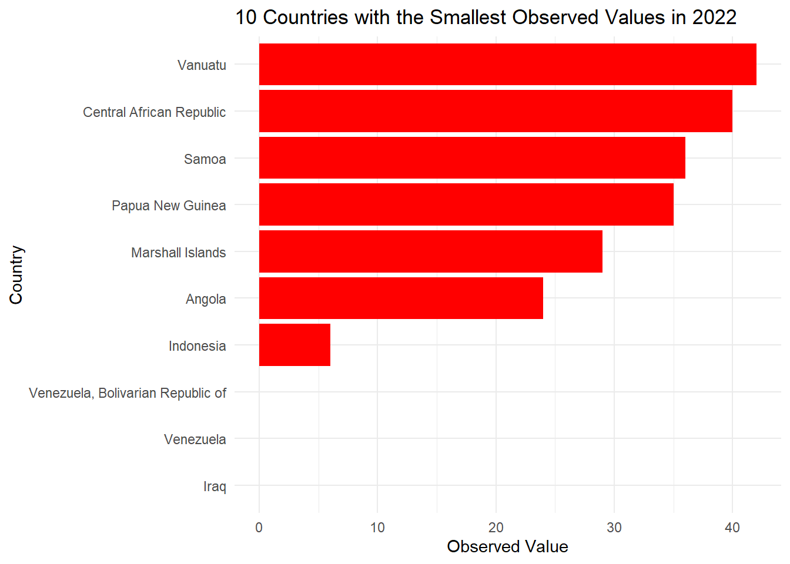
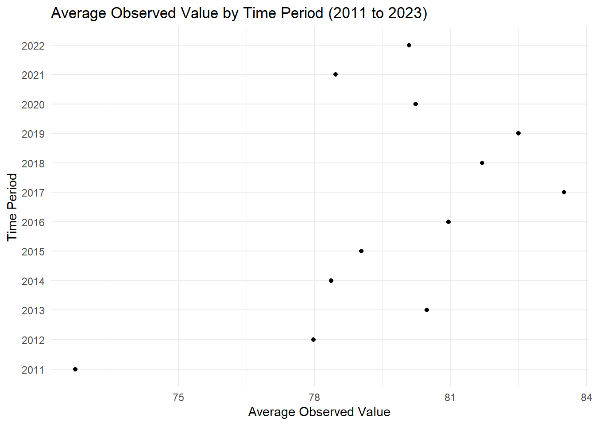

library(ggplot2)
library(dplyr)
library(sf)
library(rnaturalearth)
library(rnaturalearthdata)
avg_obs_value <- my_data %>%
group_by(alpha_3_code) %>%
summarize(avg_value = mean(obs_value, na.rm = TRUE)) # Replace na.rm = TRUE if you want to ignore NA values
world <- ne_countries(scale = "medium", returnclass = "sf")
world_data <- world %>%
left_join(avg_obs_value, by = c("iso_a3" = "alpha_3_code"))
ggplot(data = world_data) +
geom_sf(aes(fill = avg_value), color = "white") +
scale_fill_viridis_c(name = "Avg Obs Value", option = "C") +
labs(title = "Global Trends: Infant Survival Rates and Vaccination Coverage Across Countries") +
theme_minimal() +
theme(legend.position = "bottom")Guarding our Future: PCV Vaccination Rates Among Infant
The proportion of living infants who receive the third dose of the pneumococcal conjugate-containing vaccine (PCV) is a crucial measure of vaccination coverage and the efficiency of immunisation campaigns in shielding children around the world from pneumococcal illnesses like meningitis and pneumonia. Reducing childhood morbidity and mortality from pneumococcal infections requires high PCV vaccination rates, especially in low- and middle-income nations where access to healthcare and vaccinations may be restricted. This project aims to provide valuable insights to public health administrators, politicians, and healthcare professionals regarding the distribution and coverage of pneumococcal conjugate-containing vaccine (PCV) vaccinations among infants across different nations and regions. By visualizing the percentage of surviving infants who have received the third dose of PCV, users can assess progress towards achieving universal immunization goals and identify areas requiring targeted interventions to improve vaccination rates and reduce disparities in access to healthcare services.
Low vaccination rates in babies, especially for the third dose of the pneumococcal conjugate-containing vaccine (PCV), result from a complex mix of factors. Access to healthcare is limited in underprivileged areas due to remote locations, poor transportation, and sparse medical facilities. Socioeconomic disparities worsen the situation, with poor populations facing financial barriers. Supply chain disruptions, vaccine costs, and hesitancy due to cultural and religious beliefs exacerbate the issue. Inadequate governance and healthcare policies further hinder immunization efforts. To address this, efforts must focus on bridging socioeconomic gaps, promoting health education, improving vaccine accessibility and affordability, and strengthening healthcare systems through multi-stakeholder collaboration.
Boosting immunization rates protects vulnerable groups, eases strain on healthcare systems, and advances global health goals like reducing child mortality. Ensuring equitable access to vaccinations promotes health equity and social inclusion. Prioritizing initiatives to address immunization barriers safeguards public health, saves lives, and fosters resilient communities worldwide.
Raising public awareness about low vaccination rates, particularly for babies’ third dose of the pneumococcal conjugate-containing vaccine (PCV), is crucial for driving positive change. By highlighting the challenges of vaccine access and emphasizing vaccination’s importance, we can rally support for programs to improve vaccination rates and strengthen healthcare systems. Addressing vaccination hesitancy, debunking myths, and emphasizing vaccination’s role in protecting both individual and public health are essential. Empowering people with information and awareness can inspire advocacy, promote informed decision-making, and foster a culture of solidarity towards achieving universal immunization and better health outcomes for all.
The interactive map shows newborn survival rates and PCV vaccination coverage in different nations. Users can quickly identify the average observations values of each area with high or low vaccination rates because each country is color-coded. This provides context for understanding healthcare outcomes and inequities by including data on infant survival rates in addition to PCV vaccine coverage. Hovering over a country on the map allows users to examine specific information about that nation’s PCV vaccination coverage and newborn survival rate. From the map it gives the information that Hungary is the country that is having the highest average observation value of 95.42 and the least average observation value is Venezuela of 3.88.
top_10_2022_asc <- my_data %>%
dplyr::filter(time_period == 2022) %>%
dplyr::arrange(obs_value) %>%
dplyr::slice_min(order_by = obs_value, n = 10)
ggplot(top_10_2022_asc, aes(x = reorder(country, obs_value), y = obs_value)) +
geom_bar(stat = "identity", fill = "red") +
labs(x = "Country", y = "Observed Value",
title = "10 Countries with the Smallest Observed Values in 2022") +
theme_minimal() +
coord_flip()
This bar chart ranks nations according to how well their third PCV dosage immunisations have worked in 2022. Every bar symbolises a nation, and the height of the bar indicates the proportion of babies immunised; nations with vaccination rates higher than 90% are shown more prominently. 16 countries are there which have higher vaccination rate more than 90%. Turkmenistan and Tunisia are the two countries having the highest immunization success rate in the year 2022 of 98. These nations can provide valuable insights into optimal strategies for attaining elevated vaccination rates and are excellent models of successful immunisation programmes.
df_time_filtered <- my_data %>%
filter(time_period >= 2009, time_period <= 2023)
df_change <- df_time_filtered %>%
group_by(country) %>%
summarise(
start_value = first(obs_value[time_period == min(time_period)]),
end_value = last(obs_value[time_period == max(time_period)]),
change = end_value - start_value
) %>%
ungroup()
top_countries <- df_change %>%
arrange(desc(change)) %>%
top_n(5, change) %>%
select(country)
df_top_countries <- df_time_filtered %>%
filter(country %in% top_countries$country)
ggplot(df_top_countries, aes(x = time_period, y = obs_value, color = country)) +
geom_line() +
geom_point() +
labs(title = "Infant Mortality Breakthrough: Top 5 Countries with Dramatic Reductions after Vaccine Implementation",
x = "Time Period",
y = "Observed Value") +
theme_minimal() +
theme(legend.position = "bottom")This line graph shows the rates of PCV vaccination coverage over time for the top 5 nations with the greatest drops in childhood death rates following vaccine introduction. The graph shows changes in vaccine coverage rates across several years, with each line denoting a nation. Mexico was having the most rates till 2012 but later it fluctuated and came to 84 in 2022. There was a steep increase in rates for Bahamas from 2011 to 2013.These nations can be used as case studies to show how vaccination campaigns can lower infant mortality and enhance public health results.
df_filtered <- my_data %>%
filter(time_period >= 2011, time_period <= 2023)
time_period_averages <- df_filtered %>%
group_by(time_period) %>%
summarize(avg_obs_value = mean(obs_value, na.rm = TRUE)) %>%
arrange(desc(avg_obs_value))
ggplot(time_period_averages, aes(x = avg_obs_value, y = as.factor(time_period))) +
geom_point() +
labs(x = "Average Observed Value", y = "Time Period", title = "Average Observed Value by Time Period (2011 to 2023)") +
theme_minimal()
Users can see variances and discrepancies in vaccination uptake thanks to the scatter plot, which offers a visual depiction of PCV vaccination coverage rates across various nations. Data points that indicate nations with greater vaccination rates are positioned higher on the y-axis, whereas data points representing nations with lower vaccination rates are positioned lower.
This offers a comprehensive analysis of global PCV vaccination coverage and infant survival rates, empowering stakeholders, public health officials, and policymakers to target interventions effectively and manage resources efficiently. It highlights the impact of PCV immunization campaigns on reducing pediatric mortality in specific nations and allows users to identify correlations, trends, and disparities in vaccination rates across regions. Strategies to enhance access include strengthening healthcare systems, extending services to underserved areas, and ensuring reliable vaccine supply chains. Combatting vaccine hesitancy through education initiatives and addressing socioeconomic barriers, such as costs and social determinants of health, are crucial steps toward increasing immunization uptake and lowering childhood mortality rates worldwide.